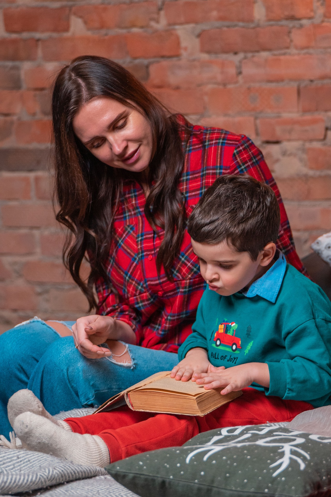

Mother Reading to Her Child
Can you imagine not being able to read to your child from a book you know that was good or a book you read as a child because the book was no longer available at your local library. This is now a reality because of the book bans that were created by Florida politicians like you!